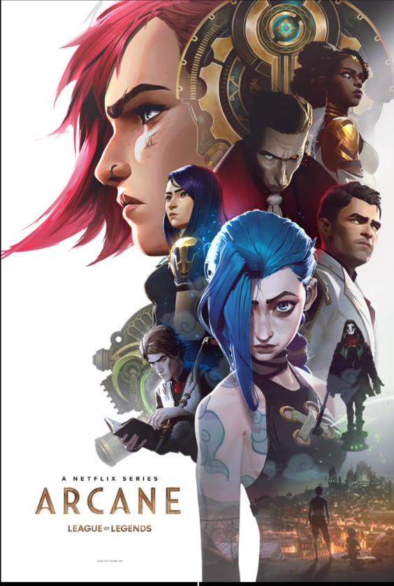

Arcane
Data de lançamento:
2021-2024
Gênero:
Animação, ação
Duração:
~ 40min por episódio
Sinopse
A sinopse de Arcane acompanha as irmãs Vi e Jinx em meio ao conflito entre as cidades opostas de Piltover e Zaun. A trama explora a origem dos personagens e as consequências da criação da tecnologia Hextec, que cria desequilíbrios sociais e políticos entre as duas regiões. A série foca no impacto pessoal e na relação das irmãs, que se encontram em lados opostos de uma guerra, com suas convicções e escolhas moldando seus destinos.